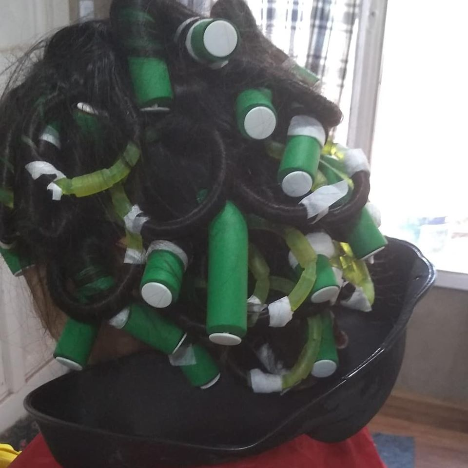
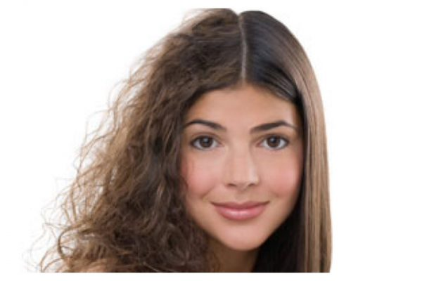
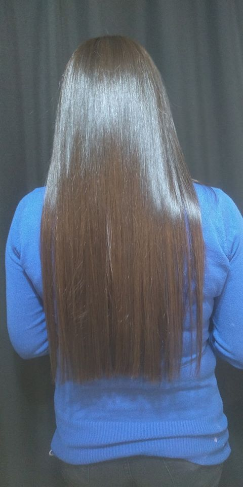

Lo que hace una permanente es mantener el rizado (las ondulaciones) o el alisado del cabello a partir del uso de productos químicos y de ciertos patrones (como amoniaco,varillas, tubos, etc.) para que la forma de rizo o lacio, se conserve.
La cauterización capilar es un tratamiento que actúa sellando la fibra capilar, devolviéndole el brillo y la naturalidad al cabello. Por ello resulta de mucha utilidad para la recuperación del cabellos castigados, con puntas abiertas, falta de brillo o quebradizos.

La diferencia entre un alisado permanente y uno temporal, es que el permanente durará un periodo superior a los 3 meses, y no se perderá con el lavado del pelo.
En caso de un alisado temporal, bastará un buen lavado, o incluso humedad en el ambiente, para volver a tus rizos originales.
También hay que tener presente, que todos los alisados permanentes usan compuestos químicos. Estos compuestos serán más o menos agresivos dependiendo del alisado que elijas.